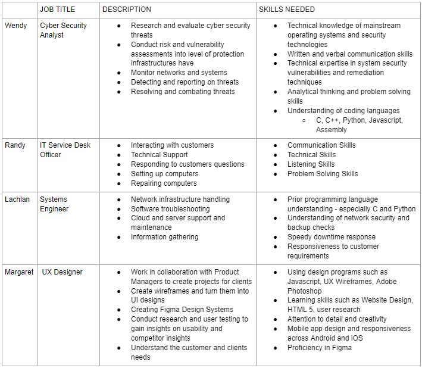
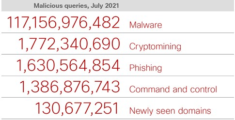
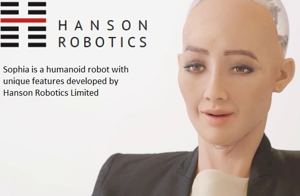

Team BRUH
Team Profiles
Hello, we are Team BRUH. There are four members in our group they are Randy (s3922276), Wendy Si (s3898700), Margaret Xiao (s3902846) and Lachlan Evans (s3660610).
Randy
Introduction
My name is Randy Le and I am currently student s3922276 at RMIT University studying in my first year of a Bachelor of Information Technology. I am currently in the class Introduction to Information Technology in a group called Team Bruh. I graduated from Year 12 last year from Victoria University Secondary College and finished VCE with an ATAR of 76. I am an Australian citizen and I was born at Monash Hospital Moorabbin on the 13th of September 2002. I live in a Vietnamese household and my family is Buddhist. A hobby of mine is that I enjoy playing games especially first-person shooters such as Valorant which brought my interest to IT because I would like to understand deeper than what appears on my screen and how everything works. I currently have no experience in IT besides when I learn computing in year 11 and everything else that I have learnt during university.
Personality Profile
According to the Myers Briggs Type Indicator I am an entertainer. This means that I would be energetic and enjoy spending the moment with others. This would be helpful for my group because I am eager and willing to accept challenges and would try my hardest to complete goals which are set by my group. According to the Learning Preferences Test I am a tactile person. This means that I prefer doing the actual activity and so I am a hands-on person. This would be beneficial towards my group because it helps me connect to my teammates easier and so I am able to build stronger relationships with them making it easier for my group to work together. According to the Big 5 Factors Test I was put in the extroversion category meaning that I am energetic and eager to complete tasks. This would be beneficial for my team as we would be able to complete tasks on time as well as me being able to help others so that we are able to reach our goal as a group.
Wendy
Introduction
Hello, My name is Wendy Si and my student number is s3898700. I am from Shanghai, but was born and raised in Melbourne. My date of birth is the 8th of February 2003 and my background is Chinese. I graduated from Nossal High School in 2020 and am now a first year Bachelor of Information Technology at RMIT. I can speak English and Mandarin Chinese, and can understand Shanghainese. A fun fact about me is that I used to be a state level swimmer when I was around 10 years old. My hobbies are playing video games, reading manga, watching anime, going clubbing and going out with friends. My interest in Information Technology is mainly centred around the coding aspect, I am interested in creating programs and learning the languages. I like how Information Technology is very practical as well, with getting the opportunity to make things. This allows me to implement what I’ve learnt and be able to create projects and sharpen my skills. My experience in Information Technology is very minimal. I learnt enough HTML to build a website back in 2017 and completed an online course in Python 2 in 2018, however those skills are long forgotten as I haven’t retained my knowledge from that time.
Personality Profile
My test outcome for the 16personalities test was ISFP. ISFP people tend to have introverted, observant, feeling and prospecting personality traits. These results may influence my behaviour in a team negatively as ISFP personalities want to do things their own way and being in a team would restrict that. By taking these into account and according to 16personalities, when forming a team I should have a balance of set goals and also freedom to express myself as well as dealing with problems one-on-one or by myself.
Margaret
Introduction
Hi, I'm Margaret and I'm an Australian born Chinese. I'm bilingual, speaking both English and Chinese. I have a pet cockatiel which I adore and her name is Jett. She's named after an agent in my favourite video game at the moment, Valorant. My interests in I.T. sparked when I was struggling to find a career path I'd be happy to pursue along with my studies. I have had a passion for computer systems and gaming for a number of years now which would naturally steer me toward I.T. What makes me more interested in this field is the evolving nature of it. Especially in the face of COVID-19, we can see how workers in the technology field are needed more than ever to facilitate virtual connection in a social distancing world. I'm currently in my first year of studying for my Bachelor of I.T. Degree.

Personality Profile
The MBTI test indicates that I am a Campaigner (ENFP) meaning I have an outgoing, openhearted, and open-minded personality. It reveals that I am a team player and my energy towards a project will generally be a reflection on how well I enjoy working with my team. I view the people I work with as not only colleagues but also as friends. Stemming from this, I take a genuine interest in my colleagues and what they need from me to create a positive and enjoyable work environment. I am very open minded, facilitating and prefer to get roles and contributions sorted out immediately. This is where communication skills come into play as I am always optimistic and willing to help others in a group setting. The learning styles quiz reveals that I have a pragmatist style of learning. I enjoy trying out new ideas, theories and techniques to see if they work. A point to highlight with this learning style is that while they may be confident and engage initially with a project, they may lose patience with lengthy discussions and prefer to get straight to the point. Factor I, Factor III and Factor V of the Big 5 test also support my ENFP Campaigner personality, those factors being extroversion, agreeableness and imagination.
Lachlan
Introduction
Hey, I’m Lachlan and I’m in my final semester of my program at RMIT, looking towards mechanical engineering and branching out into an IT-based pathway. I grew up in the rural countryside of Victoria, having ventured into the city after graduating high school and going into university, at least up until the outbreak of the recent pandemic. My interest in IT is mainly from wanting to go further into my prior work with site languages such as HTML and Javascript, which was built further from my university program’s use of the C and Java languages. I want to expand my knowledge when it comes to my engineering coursework and use it as well as my ability to write, modify and maintain my coding in order to ensure everything works right, making sure to remain versatile in the fields of computer science and mechanical or mechatronic engineering and look promising to employers as I make my way out.
Personality Profile
Going by what the Myers-Briggs test tells me, I’m what’s called an INTP-A or Logician, generally one of the more introspective personality types. From a general perspective, this type is considered great for inventive and on-the-spot thinking and a strong thirst for knowledge for the things they are passionate about. For me, this is partially true since I’m often very much lost in thought a lot of the time and able to keep throwing ideas on the wall and seeing what sticks. Generally, I often work best when there’s a group to keep my focus there, though sometimes I do end up being the motivator if I feel it’s best to keep going, according to the group role test by 123Test I took which resulted in me being called the expert, followed by the driver. The learning style test gave me somewhat of a balanced output, though it did gravitate towards the visual learner.
Ideal Jobs
Upon reviewing everyone's ideal jobs, we can see everyone has a very different course of action planned in terms of their careers. Wendy’s ideal job is to become a Cyber Security Analysis, Randy would like to become an I.T. Service Desk Officer, Lachlan is interested in becoming a systems engineer and finally Margaret's ideal career path is to pursue User-Experience Design.
Cyber security analysts plan and carry out security measures to protect a company's computer networks and systems. They conduct risk and vulnerability assessments on the security infrastructure built on the clients systems. IT service desk officers provide technical support to their customers with hardware and software repair enquiries. Systems Engineers are responsible for assessing systems, determining problems and providing solutions to issues that arise. With this they can also determine courses of actions to upgrade systems and advise possible improvements that can be made to their clients. Finally, UX designers use their skills to assist clients make products that are user-centric, accessible and enjoyable to use and navigate.
These roles all branch off into different parts of the technology field and do have very different role descriptions. However we can draw similarities where all these jobs require a level of communication skills as they are client based jobs. These communication skills will be necessary when reporting back to clients after conducting analysis and testing. UX Designers will have to conduct user testing and create frameworks There’s layers of analysis and key skill sets that are relevant to these technology based fields that are used to provide a service to the customers. Though Cyber Security Analysts and System Engineers both perform assessments on different systems, they will ultimately provide the similar insights to their clients in identifying errors or threats and areas of improvements. In addition, both jobs will require similar skill sets which includes an understanding of coding languages, especially C, C++ and Python, and the understanding and handling of network and system security. Similar to these roles, an I.T. Service Desk Officers will also be required to have a great understanding of computer systems, softwares and hardwares to assist their customers. Though it may be more straightforward hardware issues rather than troubleshooting networks of security systems.
There are important points of contrast to make on the ideal jobs selected. UX Design particularly steers toward a more creative direction when compared to the other roles. To highlight this difference, the requirement to understand multiple coding languages is not required for UX Designers as much as it would be for Cyber Security Analysts and Systems Engineers. This is the case as these roles are much more technical than UX. UX Designers focus more on creating frameworks, being able to identify what users like and conducting user testing to assist clients create a more engaging experience for users on their applications. The same can be said for I.T. Service Desk Officers. They won't be required to know coding languages to the same degree as engineers and analysts. A complex understanding of computer functionality as well as a degree of empathy and customer service is the skill set required for this ideal job.
Industry Data
Within our group, the members’ ideal jobs consist of being a Cyber Security Analyst (Wendy), IT Service Desk Officer (Randy), Systems Engineer (Lachlan) and Ux Designer (Margaret.) According to the Burning Glass Data, Lachlan’s ideal future occupation, Systems Engineering is the highest demand out of the group, being 4th place in 2018 with 786 job listings. Randy’s ideal future occupation, IT Service Desk officer, has the second highest demand out of everyone else in the group as it was ranked 5th in 2018 with approximately 779 job listings. Up next is Magaret, with UX design sitting at rank 21 with 316 job listings and lastly Wendy’s ideal job with Security Analyst position placed at rank 42 with 172 job listings.
Amidst the 4 jobs required skill set, most of the IT specific skills were shown to be in high demand by employers with skills such as being able to comprehend SQL, as it’s ranked 1 with 3,570 job postings, Javascript ranked 2 with 2,946 postings, JAVA ranked 3 with 2,860 postings, Python ranked 12 with 1,150 postings and HTML5 ranked 14 with 1,005 job postings from December 24th 2017 to March 23rd 2018 according to Labour Insight Jobs. These skills are relevant especially for jobs such as Systems Engineering and Cyber Security Analysts, where being proficient in multiple programming languages is vital and requires experience to be employed. This is relevant in Cyber Security, as they may be required when resolving and combating threats online. In Systems engineering, it is especially important to have these skills as they are software troubleshooting, and providing cloud and server support and maintenance which is required to utilise programming languages to code.
Adobe Photoshop proficiency was ranked 25 with 645 job postings and will be most likely required for positions such as UX Design, as they are often creating prototypes and wireframes.Microsoft Windows skills were also high up, being ranked 4 with 2,699 postings available and will be a relevant qualification for jobs such as being an IT Service Desk Officer, where using that program will be important. IT Service Desk officers are required to be able to provide technical support which is a skill that has 1,830 listings and is ranked 11 in 2018 and may also need to provide good customer service which is ranked 14, with 1,411 listings. This is due to the fact that this position requires IT Service Desk officers to communicate with customers and clients.
According to the data provided by Labour Insight Jobs, from our general required skill set, communication skills were in the most demand with 44,367 active selections. This is required because jobs including UX Design and IT Service Desk Officers are often communicating towards clients and other staff within their company/ business and in order to prevent issues, communicating will enable them to prevent those errors. They are also highly important as well in both Cyber Security Analyst jobs and Systems engineering, when communicating to other departments of the workforce will be important. Problem solving, writing and collaboration skills came in at the next three most important within our skill set with 16,445 as employers are often seeking for people who can take initiative and troubleshoot their own errors and be accountable for their work without being too overly codependent on other staff, 15,990, and 14,364 active selections respectively. Analytical and decision making skills were shown to be amongst the less in demand skills with under 3000 active selections in each according to data from Labour Insight Jobs.
The three highest ranked It-specific skills that were not in our required skill set were Business Management,ranked 6. This is due to none of these jobs requiring anyone to take the lead but to work under someone else and complete required tasks. SAP ranked 5 with 2,189 postings and Microsoft C# ranked 6 with 1,643 postings.
Has Team B.R.U.H's opinion of their ideal jobs changed?
Randy's Opinion
Having looked at the Burning Glass data my opinion on my ideal job has not changed much because all the necessary skills and knowledge is what I had expected and it is expected that IT jobs have a high demand and I am willing to face the competition in order to get a job. Based off the Burning Glass data I am more confident on choosing my ideal job because it is an option for me to use so that i can further branch out into other jobs which require IT skills.
Wendy's Opinion
My current thoughts regarding my ideal career still remain the same, but with research and progression of the course, I now understand that Information Technology has quite more depth than I initially thought. There are a wide array of jobs in the Information Technology industry, each with different skill sets and requirements. I still hold to my belief that a career in cybersecurity is something that I want to pursue and there are multiple job opportunities in that area of expertise. Prerequisites for a job in Cyber Security include extensive knowledge in operating systems and programming languages such as C, C++, Python, Javascript and Assembly, all in which I have no experience in. From the burning glass data, there is a high demand for cyber security services, whilst the amount of people entering the field maintains the same. This means that finding a job in cyber security would be simpler to come by than finding a job in other professions. I am interested in cyber security as problem solving and analysing are skills that I believe I have.
Margaret's Opinion
My opinion of Ux hasn't changed upon reviewing the Burning Glass Data. I've had a growing interest of Ux for the last year as something I want to expose myself to, particular as it has a more creative side to it than more of the technical work in the industry. I'm very interested in user experience as I've noticed myself, as a consumer, how useful it is in making a service more enjoyable to use. An example of this would be how it was so convenient to sign up for my current banking service as they use the less clicks usability technique. As for the skillset side of things, knowing Adobe Photoshop is ranked 25 in the required skillset, it does give me some insight into the job market currently. I'll be looking to hone my skill set in these to create wireframes and prototypes in the coming years. Not only that but I'll also have to look into developing my user research skills.
Lachlan's Opinion
The details show server engineering as a very highly sought after job, which definitely helps solidify what I want to do after I graduate and enter a career life. Overall, I would not say that the charts have decreased my confidence in finding such a job, though it may be good for me to learn the ways of SQL to bolster my employability and complement my programming skills in both Java and JavaScript while having a good understanding in the fundamentals of physics and mechatronics.
Tools
Team B.R.U.H were allocated our groups on Canvas, a Microsoft Teams was created for our team as well as a GitHub Repository. With that, a group website was created and group members were able to add their report information and media to the repository. Our group work allocation was done primarily through MS Teams and all meetings were conducted here. A Google Doc was also created for us to collaborate and write our individual contributions.
You can view our GitHub Repository here.
Meetings:
1. 25/08/21 Agenda
2. 08/09/21 Agenda3. 15/09/21 Agenda
4. 18/09/21 Agenda
5. 19/09/21 Agenda
6. 19/09/21 Agenda
I.T Work
For our interview, we chose analyst Michelle Huynh. The interview recording, accessible here, begins nine minutes into the video.
Michelle from Energy Australia works as a project analyst. Her responsibilities are to manage two time shooting systems, which includes providing support to users, managing any queries that they have, provide training and support. Furthermore, another role which she has is reporting such as data analysis on HR data as well as financial reporting for the budget of the department's trainings.
Energy Australia is a provider and seller of electricity and gas. Their headquarters is in Melbourne which is where the contact center is run to help provide customer support. Through the pandemic, Energy Australia was able to cope and keep providing through having great culture which thrives on mental health and wellbeing and so they provide extra support to workers to help them push themselves and keep going. Each employee has two recharge days per year which allows them to take the day off and to basically recharge by having a short break. The work schedule is very flexible and so workers are able to choose times in which they work. Work has shifted to online because during the pandemic the office is closed and so everyone is working remotely and they are able to interact through Microsoft Teams and meetings where the workers cameras are turned on which allows them to interact easily.
During work Michelle interacts with stakeholders and system users such as project coordinators. She also interacts with financial coordinators because with the time shooting system the projects are charging money and so there are talks with the accounting team. Furthermore, meetings are ran with internal workers such as work colleagues with cameras on because it enhances their connections. They prefer to interact in an online meeting or call rather than messaging because work can get lost easily.
Most of Michelle’s day is spent generally on queries from users. However, if she is unable to help the user with a query because she doesn’t have specific access to information, she contacts the technical team to help resolve issues. These external people tend to be overseas and so she is required to keep in mind the time difference in order to ask for support.
A challenging part of her work is that it can be frustrating because there may be many deadlines or unresolved issues which requires her to contact many different teams to help resolve the issue.
I.T. Technologies
Cloud
Cloud
Cloud is an external storage system which allows users to store data on a remote database which can be accessed from many different devices. These cloud storages tend to be safe and secure which allows its users to have an extra space to be used as a backup in case any data is lost. Data is shared and stored onto a cloud drive which allows the information to be used and maintained by different users. This is safer than saving information onto a hard drive because if the hard drive is lost then all of the data is gone however if data is saved onto a cloud, then is backed up in another location. Examples of cloud storages could be Dropbox or Google Drive which allows users to pay a monthly rate in exchange for an external storage space. Cloud Storage can vary depending on the user. For example, a user is able to have up to 2 GB of free storage on Dropbox and this can vary to unlimited amounts of spaces for the user depending on how much storage is needed.
A likely impact is that most users would tend to turn to cloud storage as it allows for them to have an external space to save all of their data. This allows for the data to be backed up which means that they don’t have to risk losing all of their information on a hard drive. Furthermore, through a cloud the user is able to access information from many other devices whilst also allowing for their personal device to have extra storage for other necessities. It is also a cheaper option for big companies as they are able to buy unlimited storage on a cloud rather than having to spend money on multiple hard drives which can be easily lost or damaged compared to an external storage which is accessed online. Data is safely stored and encrypted on an offsite location meaning that companies won't have to worry about information being easily accessed by external users however for themselves they are easily able to access the data. However, a problem with the cloud is that users rely on the cloud provider to provide efficient security measures so that data isn't deleted or stolen. Cloud storages would have an effect on me personally because they would be used as an external source for me to store any data that I need to store. Dropbox was chosen for cloud storage as there is a 180 day history recovery period, so if a file is overridden by a new version it can still be recovered up to half a year later. It offers compression free file upload, meaning file quality would remain the same. Dropbox also offers 100 GB file upload and is only $10 a month per TB. It is also extremely reliable as it generally remains online 24/7 for 365 days excluding server update periods.
Cryptocurrency and blockchain
A blockchain is a database that stores and collects its information in a form of group known as a block which, when at capacity, chains itself onto a prior-filled block, hence the name. Any new information after a filled block will be added onto a new one and so forth. Having been invented in 2008 by an unknown person or group known as Satoshi Nakamoto, the first use of the blockchain was to create the first cryptocurrency, Bitcoin. The decentralized storage system allows data to be distributed and handled by a peer-to-peer network and is generally secure.
While Bitcoin was one of the very few instances of blockchain in the 2000’s and was worth virtually nothing for the first few years of its inception, the cryptocurrency experienced an enormous boom in 2011 that bumped its price to double digits, then eventually to the thousands by 2013. By this point, numerous other decentralized blockchain currencies known as altcoins, such as Ethereum which in recent times began outperforming Bitcoin in price and demand, were created for online transactions on different platforms allowing for a greater variety in purchasing based on platform or database, drawing parallels to other similar purchasing fronts such as the stock market, where share price and demand are highly volatile and prone to sudden shifts and changes in a short period of time, oftentimes due to mainstream publicity like Bitcoin had during the mid-2010s or a corporation or figure dedicated to aggressively investing in certain things or a number of people purchasing a large portion, such as the events leading up to the GameStop short squeeze situation and to a much lesser extent in terms of cryptocurrency, Dogecoin around that same period or even the previously-mentioned boom that skyrocketed Bitcoin to five figures.
Some have touted the decentralization of the currencies to be viable when certain countries’ legal tender have failed to stay stable even compared to the internet coins. For example, Venezuela’s bolivar was so weak that by the end of 2018, a single US Dollar was worth around 250 thousand in Venezuelan cash, leading citizens of the country and any bordering towns to demand payment in other forms such as pesos, leading to speculation that some with the country may have begun usage of crypto miners, which effectively take up a computer’s computing power and in turn earns the user small transactions of coins.
Furthermore, while cryptocurrency is very much the primary use for blockchain, a newer technology regarding this type of database has recently sprung into publicity known as the non-fungible token (or NFT), which is considered as a uniquely-encoded digital item such as a piece of art or music which can be traded, similarly to collector’s items in real life. While these NFTs are generally linked to the Ethereum blockchain, they are considered independent from the cryptocurrency. Many mediums, such as paintings, albums and even films have been introduced into the token system with benefits to any investors in the technology. Jack Dorsey, the CEO of Twitter and investor in cryptocurrencies and NFTs, has speculated that within the next decade Bitcoin will be the world’s sole form of money, which is a hyperbolic claim despite the very obviously high rate at which the price for these currencies have become, though while some countries have relatively large groups of people who willingly use it as a main form of spending (there exist Bitcoin ATMs in various parts of Melbourne and Sydney), there are others that have made steps to prevent it such as China. Despite the claim, the effects of Bitcoin and blockchains in general have been made quite clear and are very likely to continue having a greater impact on societies in the future, especially for developed countries such as Australia.
Additional research into crypto technology, with particular reference to Ethereum and its blockchain system shows possible concerns regarding the environment, citing that it takes up more than 40 terawatt-hours of power which is similar to the yearly output of Hungary, with a carbon dioxide equivalent to Sudan. The likely impact from this may result in some extremely unhealthy waste generation over the next coming years, especially as blockchain continues to grow out its roots further into the mainstream. Whether this will become of a scale that will affect Earth’s temperature like scientists have warned about, we may not know, especially because again, the system is volatile like any stock market and an event which causes a system like Bitcoin to skyrocket to mainstream like many other modern technologies such as Tesla’s electric cars, where Elon Musk’s discontinuation of Bitcoin as a possible alternative to purchasing vehicles due to environmental concerns has caused drops in price and demand. The accessibility of cryptocurrency as well as NFTs still remains under fairly strict control and this appears to continue being the case for the near future. With many, many new currencies being made available over many different brokerage platforms, the possibilities will continue to increase as time goes on.
From a personal perspective, it almost seems as though it is really just a more modernized form of gambling, especially as you are trying to predict a rising rate of a certain coin only for it to quickly go downhill as others try to sell their shares as they peak. Like the stock market before it, the general plan for crypto and NFTs is to be on top of a rising trend before it peaks so that you can sell for high. Will this affect me in the future? Probably not, though its eventual mixture with mainstream society such as its inclusion as an alternative to standard physical payments or the country’s main money may be interesting to see. I could be wrong, but I doubt it will carry over many developed countries’ currencies due to how much more volatile it is than others and the extremely high price in comparison.
Cybersecurity
In this day and age, we can see how almost all parts of our daily lives have been gradually integrated into some sort of digital platform. Social media and collaboration applications allow us to communicate and socialise in informal and formal settings. This is exhibited especially as of recent due to the global pandemic and the drastic shift to a social distancing world in early 2020. Personal information is provided by users for almost every service platform sign up for and so forth this information can be used for government, business and health information systems. Even how we store and manage our finances can be done at the push of a button and accessible by applications via the internet. This means that everyone's personal data and digital footprint is stored somewhere on the internet. This is where cybersecurity plays a major role in keeping this sensitive data protected and secure. Without a Cybersecurity program put in place by the institutions that provide a service which requires personal information to be stored, data breaches and cyber attacks can put your personal data and a business or enterprise's operations at risk.

There are many different cybersecurity threats that systems will need to be protected from. With the introduction of new technologies, there will always be the need to be vigilant and look out for the next threat. The most common types of cyberthreat cases present in 2021 are shown in figure 1.
Malware, being the most common type of malicious cyberattack, is an umbrella term for any software designed to cause harm to a computer user. This includes viruses, trojans, worms and ransomwares to name a few. Viruses, as the name suggests, infect clean files which then allows it to spread to other clean files to which the cycle continues. This can damage the system's core functions and result in corrupt files. Trojans are decoys that pose as a legitimate downloadable software or are hidden in a legitimate software that has been interfered with. The goal of a trojan is to sneak onto a device to install malware. This sort of malware can not operate unless the user activates this by mistake. This is commonly done by counterfeit download links and advertisements. Worms, in the same way as viruses, spread to files which then can infect entire networks. The difference here being that they can spread without a host file. Ransomware is a type of malware that locks up your computer or your files and data with the threat to delete everything unless a ransom is paid. These are just a few of the most common types of malware that specialists in the field of cybersecurity work to protect systems and common individuals from. Kaspersky, a global security company, conducted a global study on ransomware victims. Of the study population, '56% of ransomware victims paid for access to their data last year (2020)' (Kaspersky, 2021). The study also highlights that 17% of those who did end up paying the ransom were not even guaranteed the return of the personal data in exchange; 65% of this statistic being 35-44 years of age, 11% being 16-24 year olds and only 11% of those being over the age of 55. This highlights that people of all age groups can be victims of these scams. The younger generation and the working class who's systems are being digitized more as the years go on are the most vulnerable. Another frequent type of cyberthreat that people will encounter is phishing. This is when cybercriminals construct fraudulent emails that replicate or draw inspiration from reputable brands and businesses. This is often a ploy used by them to prompt individuals to expose their credit card details and other personal data to them.
Cybersecurity is the practise of protecting servers, systems, networks, data and devices from malicious attacks from cybercriminals or those who just want to cause these institutions trouble. The severity of this pressing issue can be highlighted by Risk Based Security's 2021 Mid Year Data Breach Quick View Report. This report revealed that in the first 6 months of 2021, public breaches of 1,767 were reported. These breaches resulted in a total of 18.8 billion records. Risk Based Security also highlights that though this number has declined by 24% compared to the previous year, this does not mean that system security has necessarily increased during the pandemic.
What we can see now is that systems now put in place restrictions on simple passwords, prompting users to create strong ones with symbols, numbers and capital letters. This is now being taught from a young age. Others take advantage of paid subscription antivirus software or VPNs to keep their browsing anonymous from potential cybercriminals. Though there will always be new ways for people to breach systems and steal data, being informed on what to recognise in a malicious online attack is useful when conducting oneself on the internet.
According to the federal budget insights reported by PWC, Australia has invested 26.5 million into the Cyber Security Strategy which will aim to assist the disparity in supply and demand of cyber security professionals in the workforce. Globally by 2026, it is estimated that 3.5 million jobs will be open globally, with 17,000 of those being needed in Australia. With new technologies there is going to be a need for great security. This creates more job opportunities for the working class. Along with this will be the opportunity for workers to be challenged with being able to adapt and work around new challenges.
In my daily life, I do use ad blockers and am able to recognise fraudulent emails, misleading ads and suspicious links to download software. With this, I am able to avoid this where necessary. Especially during the pandemic, I would do a lot of online shopping and with that, I’ve found that I am able to recognise which systems are safe for me to input my personal information and which are not. I use PayPal for online purchases which gives me a sense of security as I’ll need to do two-factor authentication and verify through my mobile when I choose to. On my mobile, most personal apps such as banking and institution passwords are activated and verified by face ID which adds on to this security. Being aware of the different types of cyberthreats is definitely knowledge that will help me in the future. On occasion my parents have been victims of cyberthreats, particularly of the financial sort especially because they are not great at English along with new technologies. However, these experiences have provided them with learning experiences on how to recognise a malicious attack as well as understanding the need to be cyber secure.
Robotics
The study of robots delves into and integrates computer science and engineering to design and create robots. The definition of a robot is an artificially created intelligence/computer that has the capabilities to complete tasks and functions typically done by humans and are able to be programmed to do work or to obey device commands. Due to constraints such as time and cost being critical factors to companies and enterprises, robots are often viewed as a favourable option for labour compared to their human counterparts due to the low cost and also low margin of error as compared to their human counterparts. Other considerations that make robots the optimal alternative to human work include the high risks and hazards that some fields of work encounter. An example would be robots being able to complete tasks such as flying around gas towers and travelling space, all in which human lives are not exposed to any risk.
Over the decades, robots have slowly integrated into society, with robotics being utilised in industry where robots cut and assemble parts, medicine, science, space exploration with scientists sending robots to explore surfaces of the moon among other planets, construction, food packaging and delivery, hospitality, and even more complex aspects such as surgery where the task is deemed too delicate for a surgeon to operate or as an aid in regular surgeries such as coronary artery bypasses. Being introduced in the 1950s and 1960s when transistors and integrated circuits were invented, robots have advanced from hydraulically powered robotic arms to intricate artificial intelligence such as ‘Sophia’. In present society, robots are used to perform labour tasks for humans which would otherwise be either too dangerous or too hard for humans to do according to NASA’s Rover Ranch website.
In today’s society, robots are also able to perform social duties and interact with people. Robots such as Japan’s HRP-4C robot, which replicates the average Japanese woman, the Telenoid R1 robot which allows users to communicate over long distances, and ‘Sophia’ the social humanoid robot which is capable of social interactions. In the medical field, students are provided with robotic patients to imitate the experience of interacting with a patient without the risk of injuring them. Robotics are also incorporated into the toy industry. Children’s toys such as Sony’s Aibo are a simple representation of robots and are able to complete tasks such as walking, dancing or speaking on command.
Today, researchers and academics are aiming to achieve even higher levels of automation, with robots increasingly taking over production processes. Complex components may be created using 3D printing and additive manufacturing, and many businesses want to automate the machine repair process, with flaws identified before they cause failures and replacement parts manufactured and changed out automatically. This might lead to self-building and self-repairing devices, dubbed John von Neumann machines (self-replicating machines) after the mathematician who first proposed them in the late 1940s.

With advancements in technology, the breadth of what is referred to as robots expands as well. In 2005, the automotive industry was able to locate 90% of all robots used in car assembly. The idea of robotics is expanding and broadening nowadays, encompassing the assembly, construction, and usage of bots that investigate hard areas on Earth. There are robots that assist law enforcement, and even robots that assist in almost every aspect of health care. Latest advancements in robotics include robots having the ability to reduce their carbon footprint. In recent times, investments into robotics have been driving robots towards having a lesser carbon footprint. Modern robots are energy-efficient, decreasing production's energy usage immediately. They also generate fewer rejects and inferior items because of their increased accuracy, which benefits the ratio of resource input to output. Robots also assist in the effective manufacture of renewable energy equipment like photovoltaics and hydrogen fuel cells.
Robotic systems that can act and think independently, like humans, have been created in an effort to autotomize society. AI, or artificial intelligence, is what robots will be like in the not too distant future. Robots equipped with artificial intelligence can learn new things, look back at prior data, and even predict what will happen in the future. Artificial intelligence has now progressed to the point that robots can recognise human faces and behave accordingly. With improvements in public safety, education, housing, workplaces, healthcare, and the standard of life, robotics will play an increasingly important role in future civilisation. Artificial intelligence (AI) is being developed by programmers to help law enforcement identify and respond to criminal activity as soon as it is detected. While computer-based learning is already common in daily life, the advancement of robots will aid in the process of personalised learning around various learning styles. Robots linked to the cloud are now part of our daily lives, and as technology advances, robots will be able to adapt and interact with us more in the future. With their ability to take on numerous tasks in organisations, machines will certainly become indispensable at work in the future, helping to relieve the burden on humans. As artificial intelligence progresses, we may be able to use voice commands to connect with our robot co-workers. Human physicians will be replaced by robots in the healthcare business in the near future, when robots check on you and evaluate patients instead of humans. The industrial revolution saw a rise in the level of living brought on by automation. According to United Nations statistics, poverty has declined more dramatically in the last five decades than it has in the preceding 50, thanks in large part to advances in technology and the development of robots.
A great deal of good has come from robots; yet, there are certain disadvantages as well, particularly in terms of employment availability for current and future employees. Due of their increased presence in modern culture, they are increasingly becoming more normalised and commonplace. Robots in the kitchen at restaurants aid with cooking and preparation, thus they help make workplaces run more smoothly. They may be found on a wide range of daily items, including cell phones, televisions, speakers, and other electronic equipment. As robots develop artificial intelligence, they will be able to do more communicative tasks like waiting. However, this may have a huge impact on individuals looking for work, since robots are steadily taking over more tasks. Businesses, on the other hand, save money since they no longer have to pay wages to employees.
Because I use robots like Siri on my phone and Alexa to answer questions and needs, it has made my daily life more efficient and productive because I can easily gain the knowledge I need, such as my public transportation schedule, the weather, appointments, or even basic questions about anything through Google. Robots have also had a beneficial influence on my mental health since they keep me occupied when I want to perform tasks alone, but with artificial intelligence's company, I can play games and communicate with artificial intelligence, which makes it feel like I am being accompanied.
Our Project
My current thoughts regarding my ideal career still remain the same, but with research and progression of the course, I now understand that Information Technology has quite more depth than I initially thought. There are a wide array of jobs in the Information Technology industry, each with different skill sets and requirements. I still hold to my belief that a career in cybersecurity is something that I want to pursue and there are multiple job opportunities in that area of expertise. Prerequisites for a job in Cyber Security include extensive knowledge in operating systems and programming languages such as C, C++, Python, Javascript and Assembly, all in which I have no experience in. From the burning glass data, there is a high demand for cyber security services, whilst the amount of people entering the field maintains the same. This means that finding a job in cyber security would be simpler to come by than finding a job in other professions. I am interested in cyber security as problem solving and analysing are skills that I believe I have.
When it comes to coordination-heavy team games such as Destiny or Valorant, it can be a complete gamble trying to just look for parties from playing the game itself where randoms may derail a group’s efforts, or searching for them in online communities such as the ones you may find on Discord, where even looking on official find-a-group discussion boards won’t guarantee you will find one. The general focus of this program would be to help people who need some kind of consistent party for a game find one remotely and helpfully. It could alternatively be used as some kind of coaching platform for newer players to get into a highly complex or competitive game such as Dota 2 or Overwatch without risking strong backlash from annoyed veteran players misconstruing lack of experience with maliciousness.
Users will be prompted to create a profile with some basic personal information as well as the games they play or are looking to play. The service will allow you to post media content, this could be gameplay or just personal photos to let users know more about you. There will be a voice and video chat service which will also allow for gameplay streams by a host to multiple users. Hosts will be able to showcase their personalities with clips and post them directly to their page. You can set up groups and allow people to join groups, large or small. For those who play competitive/casual multiplayer games, there will be an explore page with various users. You can set your status to 'looking for friends' just as an individual or even as a group. You can filter the explore page with multiple tags. This could be by game, rank, etc. For those who are shy or introverted but also would like to meet new people to spend time playing games or other activities, this can provide an avenue for them to have some exposure without putting too much out there too fast.
The app will be available on Windows desktop as well as iOS and android devices so we will need the appropriate tools and technologies to develop it for these platforms. We could make use of the Electron framework using web technologies to create this cross-platform app. For this project, we'll be needing to cater to our target audience, people who play video games that would also like to make friends and share their content. Conducting user testing will be necessary to see what people would understand of UX/UI Design will be required to ensure fluid experience with the application. For the backend, coding skills will be required. Code languages, such as Python, HTML, Java, etc will be essential to create the back-end operating system for the program.
If the project is successful, Project INT should provide a service that will allow for gamers of all types to come together and build communities. You can share content, promote, talk, video, stream, upload media with close friends and make new ones. If you are keen to make new friends to play games with and don't know where to begin, this service provides an avenue for this to take place.
Reflection
Team B.R.U.H's Reflection
The group overall had a slow start in ensuring everything was together and tasks were generally relegated to near the end of the project’s progress, but whenever there was cohesion from group activities made through calls and task allocation, they were often done well. Of course, there were a few hiccups in trying to make sure one person stayed on task or trying to communicate, sometimes it took a lot of effort to make sure we all stayed working before sidetracking occurred, though there were minimal arguments or complaints about having to do requirements in the group. Everyone’s personality types were very friendly and it made it easy to progress further without any issues, despite encountering various issues along the way. For Team BRUH, the most notable difficulty was that we had a member of our team leave suddenly, increasing the workload for the remaining 4 members. With this obstacle, we had to compromise on our already decided work allocations which we were all happy to cooperate with in the end. Though communication was not as frequent as we would have liked, as a team in our own time we were able to complete our own personal tasks by the date of the submission. Team BRUH’s group members were all willing to collaborate and give their input to the website design and the report contents. Going into our next collaboration, Team BRUH as a collective will need to set weekly deadlines or something in that regard to ensure work is done over time.
Individual Reflections
Randy
Despite our group being inactive we were still able to complete our assigned task. Although we didn't communicate a lot, when we had the opportunity to have a meeting, almost every group member would participate and also get their assigned tasks done.
A thing that can be improved is that we need to find a good time to have meetings and communicate more with each other within these meetings whether it is on what tasks need to be done or things that have to be completed. Furthermore, members need to ask for help where it is necessary.
Something very surprising is despite our group being disadvantaged because we only had 4 group members compared to other groups who had 6 we were still able to complete our tasks even though it required us to put in much more effort with very little notice.
Groups can be both good and bad because when you are in a group you learn to work together however if one group member is left behind then that would drag down the rest of the group and so we are taught to help each other. Furthermore, groups can be beneficial if they are efficiently working because you are able to produce more work in less time as group members are working on their own individual work
Lachlan
When the team made an opportunity to work together, the tasks finished pretty fast with no complaints. Generally, peak team movement was when everyone was on the call. Most members had at least some kind of chemistry without any possibility for heated arguments, which given my experience in group work has happened before. Once some of the other members have a certain goal to complete they eventually do it.
Although, while it can be said that there were no arguments, it can also be argued that there was not so much communication for some parts of the project, generally when there's not a call everyone's doing something else. When the fifth member left the group and dropped out of the subject on short notice, it was a big surprise and frustration, considering the notification was during a second attempt to fully form a team and took even longer to keep everyone focused. What should hopefully happen next is to keep giving the team tasks and flexible deadlines so everyone does their part over time. From what I’ve learned from group assessments, you really need to just set some time aside and work with them directly to make sure there’s maximum focus.
Margaret
I enjoyed working with the group as everyone was very friendly and willing to cooperate with the task allocations. Everyone had no complaints with group work allocations and if a part needed to be done, there was always one person willing to help out if someone was falling behind. I will add that time management as a team was definitely a point that we could all as a group improve on. We set non-official deadlines that almost never went according to plan, whether it be because someone had to postpone on an interview, the impromptu leaving of a member or just because there were clashes in our own personal schedules. One thing that was surprising was that Randy was able to organise a I.T. professional interview very quickly which created momentum in our group. I've learnt to be patient with group members as well never being afraid to reach out for help if I do need it. The group is there for a reason.
Wendy
Everyone in this group was very active and took initiative to complete our designated tasks. The group members were very supportive and we each were allocated roles and areas to work on so everyone had an idea of what was expected of them. Something that can be improved on is my own presence in group meetings and communicating with the group about tasks and progress. We did end up rushing a bit at the end of the assignment, but overall the group was able to complete our respective parts to a satisfactory level. What I have learnt about groups is that communicating is a crucial part of teamwork and to succeed I must be more active in group discussions and meetings.
References
Contributor, C. (2021) An Introduction to Robots; How Important Are They?, Customerservicemanager.com. Available at: https://www.customerservicemanager.com/an-introduction-to-robots-how-important-are-they/ (Accessed: 14 September 2021).
A Brief History of Robotics since 1950 | Encyclopedia.com (2021). Available at: https://www.encyclopedia.com/science/encyclopedias-almanacs-transcripts-and-maps/brief-history-robotics-1950 (Accessed: 14 September 2021).
What Robots Are Used Today? (2021). Available at: https://sciencing.com/what-robots-are-used-today-12745877.html (Accessed: 16 September 2021).
Top 5 Robot Trends 2021 (2021). Available at: https://ifr.org/ifr-press-releases/news/top-5-robot-trends-2021 (Accessed: 16 September 2021).
What is Robotics? What are Robots? Types & Uses of Robots. | Built In (2021). Available at: https://builtin.com/robotics (Accessed: 16 September 2021).
Buckler, L. (2021) 10 Ways Robotics Could Transform Our Future, Blog.robotiq.com. Available at: https://blog.robotiq.com/10-ways-robotics-could-transform-our-future#:~:text=Robots%20will%20have%2 (Accessed: 19 September 2021).
The Future of Robots and Robotics (2020). Available at: https://builtin.com/robotics/future-robots-robotics (Accessed: 19 September 2021).
What Dropbox, Cloud storage and file storage, Dropbox.com, https://www.dropbox.com/features/cloud-storage, 16/9
What is Cloud Storage? | AWS, Amazon Web Services, Inc., https://aws.amazon.com/what-is-cloud-storage/
Investopedia. 2021. Bitcoin's Price History. [online] Available at:
Levy, A., 2018. TECH Twitter CEO Jack Dorsey says bitcoin will eventually be the single global currency. [online] CNBC. Available at:
Carmody, M., 2019. What caused hyperinflation in Venezuela: a rare blend of public ineptitude and private enterprise. [online] The Conversation. Available at:
Clark, M., 2021. People are spending millions on NFTs. What? Why?. [online] The Verge. Available at:
Feng, C., 2021. World’s first NFT film is a Covid-19 thriller starring Anthony Hopkins. [online] South China Morning Post. Available at:
Lewis, S., 2021. NFTs may be the future of art — but are they threatening the future of the planet?. [online] Cbsnews.com. Available at:
2021. [online] Available at:
Securitymagazine.com. 2021. [online] Available at:
Upguard.com. 2021. Why is Cybersecurity Important? | UpGuard. [online] Available at:
Upguard.com. 2021. Why is Cybersecurity Important? | UpGuard. [online] Available at:
www.kaspersky.com. 2021. Over half of ransomware victims pay the ransom, but only a quarter see their full data returned. [online] Available at: